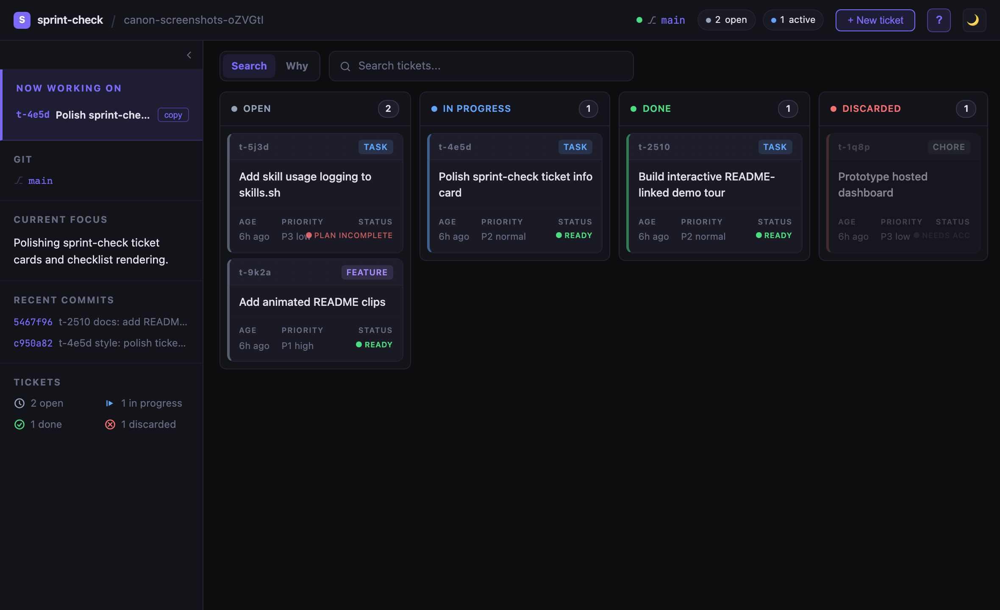
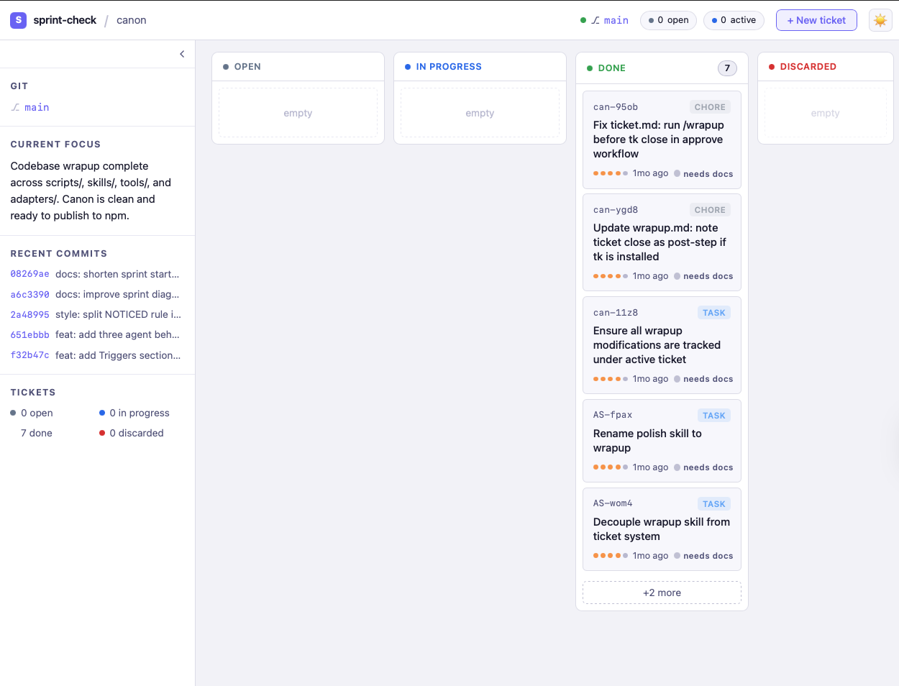
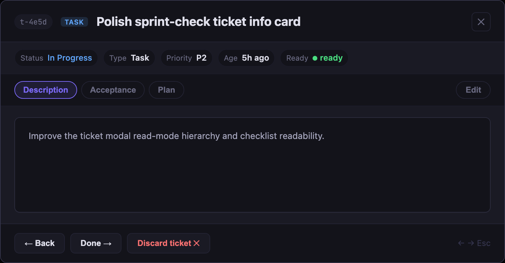
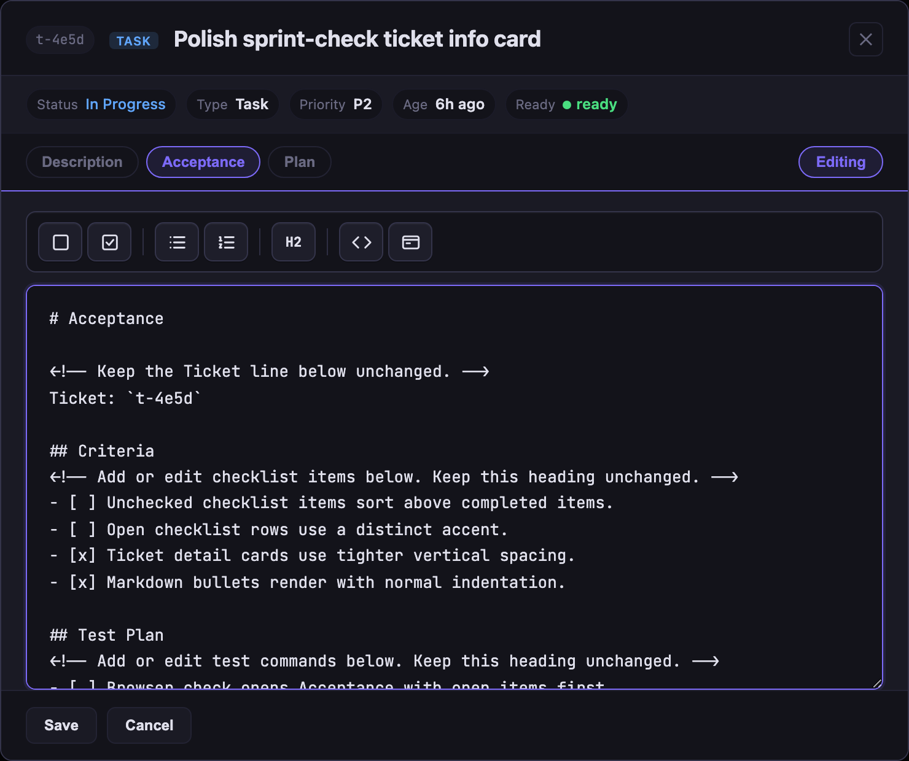
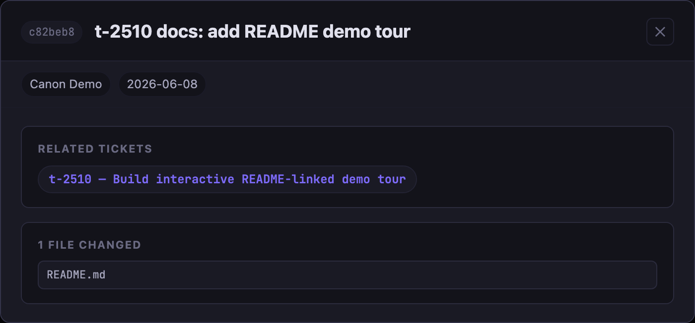

Board
Start here. The overview shows the status lanes and the current sprint at a glance.


Open a stage, click a screenshot, and the viewer expands inline. The README stays short; the proof stays local.
Start here. The overview shows the status lanes and the current sprint at a glance.


Open a card to inspect status, docs, and related commits in one modal.

Edit the acceptance or plan doc in place, with the editor controls visible in context.

Read the commit panel without leaving the ticket or losing the thread.

Click any screenshot to expand it in place. Use Esc or the close button to dismiss the viewer.